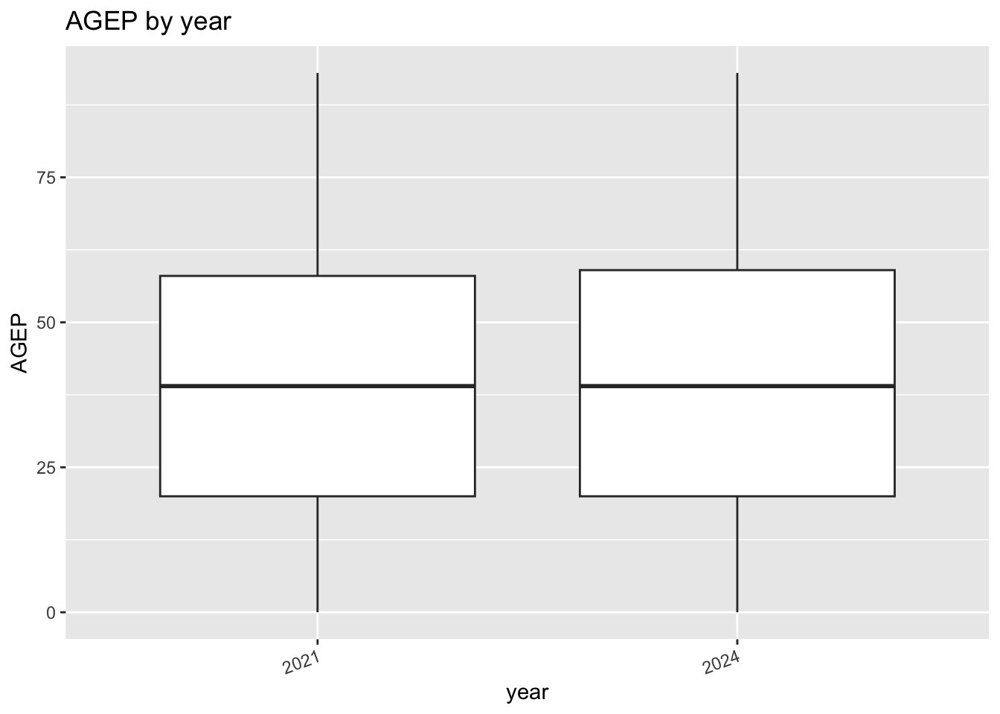
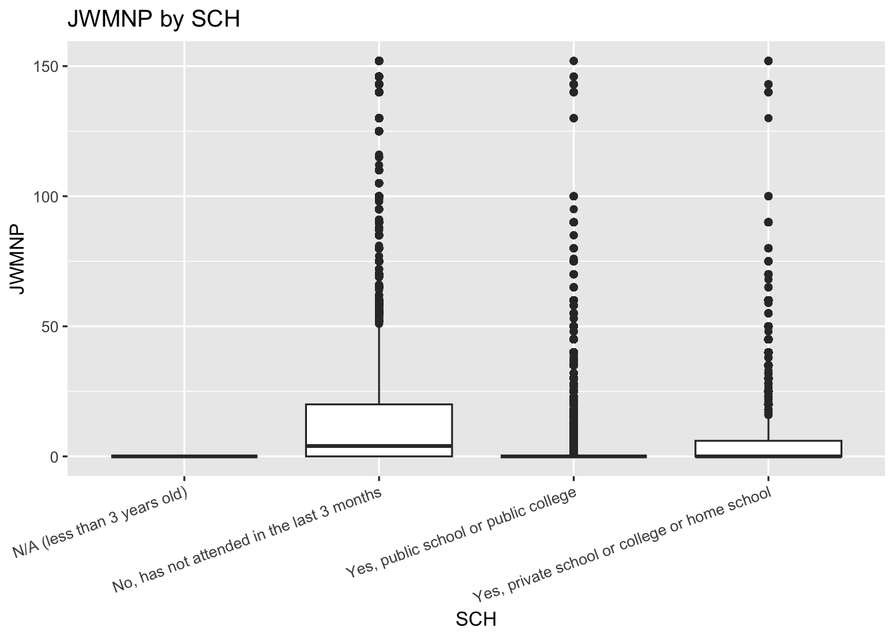
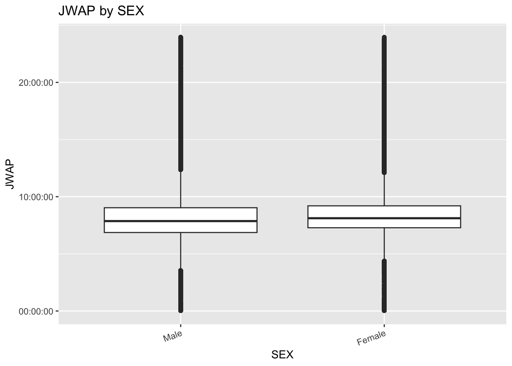
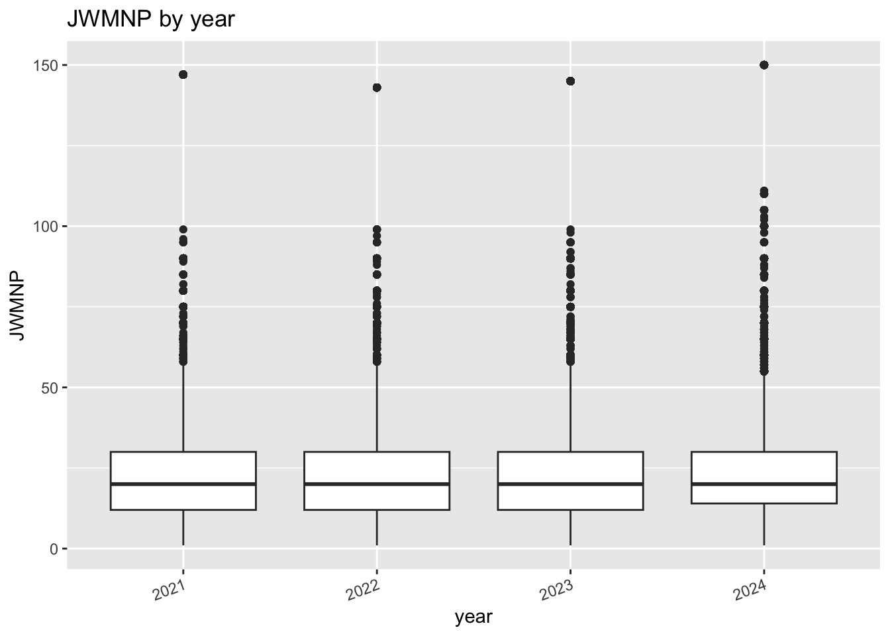
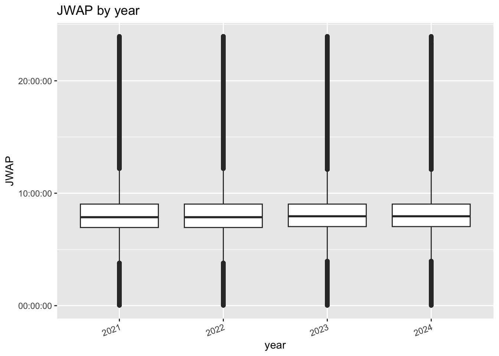
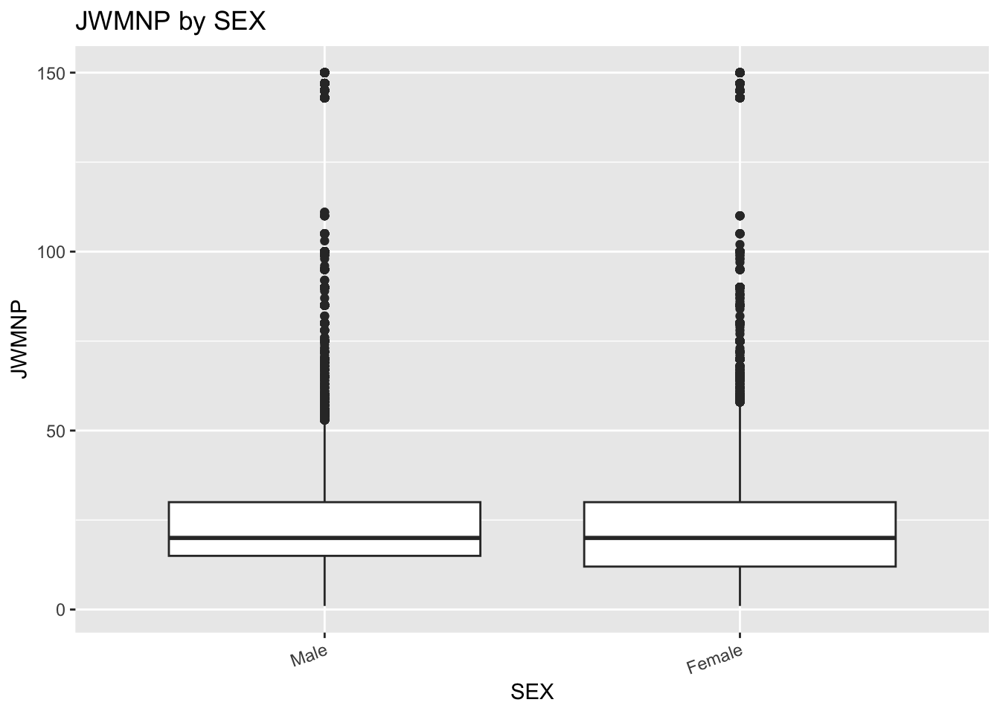

# Variables we want to keep
keep_vars <- c("AGEP", "GASP", "GRPIP", "JWAP", "JWDP", "JWMNP", "PWGTP",
"FER", "HHL", "SCH", "SCHL", "SEX", "ST", "STATE",
"REGION", "DIVISION")
# Get and parse the variable info for one year
get_var_list <- function(year) {
# build the URL for that year
url <- paste0("https://api.census.gov/data/", year, "/acs/acs1/pums/variables.json")
# query and parse the json
result <- GET(url)
parsed <- fromJSON(rawToChar(result$content))
# keep only our variables (ST or STATE depending on year)
vars <- parsed$variables[intersect(keep_vars, names(parsed$variables))]
# pull out just the values for each variable
lapply(vars, function(x) x$values$item)
}
# Get one list for each year
var_lists <- list(
"2021" = get_var_list(2021),
"2022" = get_var_list(2022),
"2023" = get_var_list(2023),
"2024" = get_var_list(2024)
)
# Save to the data folder
dir.create("data", showWarnings = FALSE)
saveRDS(var_lists, "data/var_lists.rds")ST 558 Project 1
Introduction
For this project I’m using the Census PUMS API to pull survey data from 2021 to 2024. I’ll write functions to query and clean the data, then summarize and plot it, and finish by looking into something interesting.
Part 1: Data Processing
Parsing Variable Values
The API returns codes instead of labels, so this function grabs each year’s variable info and keeps just the values for the variables I need. Then I save all four years to an .rds file in my data folder.
Parsing API Data
Before writing the big function, I want to make sure a basic API call works. This pulls a few variables for North Carolina in 2024, and the helper turns what comes back into a tibble.
# Test call: 2024, a few variables, North Carolina (state 37)
test_url <- paste0("https://api.census.gov/data/2024/acs/acs1/pums?",
"get=AGEP,PWGTP,SEX&for=state:37&key=", Sys.getenv("CENSUS_KEY"))
test_result <- GET(test_url)
# Helper to turn what GET() returns into a tibble
api_to_tibble <- function(result) {
# parse the json into a matrix of strings
parsed <- fromJSON(rawToChar(result$content))
# first row holds the column names, the rest is the data
colnames(parsed) <- parsed[1, ]
as_tibble(parsed[-1, ])
}
# Try it out
test_data <- api_to_tibble(test_result)
test_data# A tibble: 114,270 × 4
AGEP PWGTP SEX state
<chr> <chr> <chr> <chr>
1 23 60 1 37
2 21 49 1 37
3 20 24 1 37
4 79 54 2 37
5 18 79 1 37
6 19 54 2 37
7 22 58 2 37
8 18 17 2 37
9 22 30 1 37
10 67 37 2 37
# ℹ 114,260 more rowsHelper Functions for Cleaning
The API gives back codes as text, so I need a few helpers. The time ones turn JWAP and JWDP codes into the middle of their time range, and the last one turns categorical codes into labeled factors using my .rds file.
# Turn one time range string like "7:00 a.m. to 7:04 a.m." into its midpoint
get_mid_time <- function(time_string) {
# missing values or labels that aren't time ranges become NA
if (is.na(time_string) || !str_detect(time_string, " to ")) {
return(hms::as_hms(NA_real_))
}
# swap a.m. and p.m. for AM and PM so lubridate can read them
clean <- time_string |>
str_replace_all("a\\.m\\.", "AM") |>
str_replace_all("p\\.m\\.", "PM")
# split into the start and end times
parts <- str_split(clean, " to ")[[1]] |> str_trim()
# parse both as clock times
times <- parse_date_time(parts, orders = "I:M p")
# seconds since midnight for each end
secs <- hour(times) * 3600 + minute(times) * 60
# if the range crosses midnight, push the end into the next day
if (secs[2] < secs[1]) secs[2] <- secs[2] + 86400
# midpoint, wrapped back into a single day
hms::as_hms(mean(secs) %% 86400)
}
# Convert a whole column of JWAP or JWDP codes into midpoint times
convert_time_codes <- function(codes, value_list) {
# lookup of code to label, matching codes as numbers so "001" and "1" line up
lookup <- unlist(value_list)
keys <- suppressWarnings(as.numeric(names(lookup)))
# find the midpoint for each possible label just once
mids <- map_dbl(lookup, \(x) as.numeric(get_mid_time(x)))
# match each code to its midpoint and return as a time column
hms::as_hms(unname(mids[match(suppressWarnings(as.numeric(codes)), keys)]))
}
# Convert a column of categorical codes into a labeled factor
convert_cat_codes <- function(codes, value_list) {
# lookup of code to label, matching codes as numbers
lookup <- unlist(value_list)
keys <- suppressWarnings(as.numeric(names(lookup)))
# label for each code
labels <- lookup[match(suppressWarnings(as.numeric(codes)), keys)]
# factor with levels in code order
factor(unname(labels), levels = unique(unname(lookup[order(keys)])))
}
# Quick check that the midpoint helper works on one value
get_mid_time("7:00 a.m. to 7:04 a.m.")07:02:00Querying One Year
Now the main function. It checks everything the user gives it, builds the URL, gets the data, and cleans up the columns before returning a tibble with the census class.
get_census <- function(year = 2024,
num_vars = c("AGEP", "PWGTP"),
cat_vars = "SEX",
geo_level = "State",
geo_value = NULL) {
# year has to be a single valid value
if (length(year) != 1 || !(year %in% 2021:2024)) {
stop("year must be one of 2021, 2022, 2023, or 2024")
}
# numeric variables: PWGTP always included, plus at least one other
num_options <- c("AGEP", "GASP", "GRPIP", "JWAP", "JWDP", "JWMNP")
num_vars <- unique(c("PWGTP", num_vars))
if (!all(num_vars %in% c("PWGTP", num_options))) {
stop("numeric variables must come from: ", paste(num_options, collapse = ", "))
}
if (length(setdiff(num_vars, "PWGTP")) < 1) {
stop("you need at least one numeric variable besides PWGTP")
}
# categorical variables: at least one, from the allowed list
cat_options <- c("FER", "HHL", "SCH", "SCHL", "SEX")
if (length(cat_vars) < 1 || !all(cat_vars %in% cat_options)) {
stop("categorical variables must come from: ", paste(cat_options, collapse = ", "))
}
# geography level: just one of Region, Division, or State
if (length(geo_level) != 1 || !(geo_level %in% c("Region", "Division", "State"))) {
stop("geo_level must be one of Region, Division, or State")
}
# variable info for this year
vars_year <- readRDS("data/var_lists.rds")[[as.character(year)]]
# state variable name changed in 2023
state_var <- if (year %in% 2021:2022) "ST" else "STATE"
geo_var <- switch(geo_level, Region = "REGION", Division = "DIVISION", State = state_var)
# defaults if no specific geography given (kept small so it runs fast)
if (is.null(geo_value)) {
geo_value <- switch(geo_level, Region = "1", Division = "1", State = "37")
}
# check the geography values against the .rds file, "all" is allowed
get_all <- length(geo_value) == 1 && tolower(geo_value) == "all"
if (!get_all && !all(geo_value %in% names(vars_year[[geo_var]]))) {
stop("geo_value has a code that isn't valid for ", geo_level, " in ", year)
}
# build the url
geo_string <- if (get_all) "*" else paste(geo_value, collapse = ",")
url <- paste0("https://api.census.gov/data/", year, "/acs/acs1/pums?get=",
paste(c(num_vars, cat_vars), collapse = ","),
"&for=", tolower(geo_level), ":", geo_string,
"&key=", Sys.getenv("CENSUS_KEY"))
# query and turn into a tibble
census_data <- api_to_tibble(GET(url))
# plain numeric variables to numbers
for (v in setdiff(num_vars, c("JWAP", "JWDP"))) {
census_data[[v]] <- as.numeric(census_data[[v]])
}
# time variables to midpoint times
for (v in intersect(num_vars, c("JWAP", "JWDP"))) {
census_data[[v]] <- convert_time_codes(census_data[[v]], vars_year[[v]])
}
# categorical variables to labeled factors
for (v in cat_vars) {
census_data[[v]] <- convert_cat_codes(census_data[[v]], vars_year[[v]])
}
# add the census class
class(census_data) <- c("census", class(census_data))
census_data
}Trying it with the defaults, and then with some different choices.
# Defaults: 2024, AGEP and SEX for North Carolina
nc_2024 <- get_census()
nc_2024# A tibble: 114,270 × 4
PWGTP AGEP SEX state
<dbl> <dbl> <fct> <chr>
1 60 23 Male 37
2 49 21 Male 37
3 24 20 Male 37
4 54 79 Female 37
5 79 18 Male 37
6 54 19 Female 37
7 58 22 Female 37
8 17 18 Female 37
9 30 22 Male 37
10 37 67 Female 37
# ℹ 114,260 more rows# Travel time and arrival time by school enrollment for New England in 2022
ne_2022 <- get_census(year = 2022,
num_vars = c("JWMNP", "JWAP"),
cat_vars = c("SCH", "SEX"),
geo_level = "Division",
geo_value = "1")
ne_2022# A tibble: 156,307 × 6
PWGTP JWMNP JWAP SCH SEX division
<dbl> <dbl> <time> <fct> <fct> <chr>
1 48 20 08:02 Yes, private school or college or home sch… Fema… 1
2 35 60 08:02 Yes, public school or public college Fema… 1
3 95 0 NA No, has not attended in the last 3 months Fema… 1
4 49 0 NA No, has not attended in the last 3 months Fema… 1
5 17 0 NA No, has not attended in the last 3 months Male 1
6 25 0 NA Yes, public school or public college Fema… 1
7 20 0 NA No, has not attended in the last 3 months Male 1
8 15 0 NA No, has not attended in the last 3 months Male 1
9 8 0 NA No, has not attended in the last 3 months Male 1
10 63 0 NA No, has not attended in the last 3 months Fema… 1
# ℹ 156,297 more rowsThe NAs in JWAP are people who do not commute, like those who work from home or do not work so they do not have an arrival time. Showing the error checks work with a bad year and a bad geography level.
# Bad year
tryCatch(get_census(year = 2019), error = function(e) conditionMessage(e))[1] "year must be one of 2021, 2022, 2023, or 2024"# Bad geography level
tryCatch(get_census(geo_level = "All"), error = function(e) conditionMessage(e))[1] "geo_level must be one of Region, Division, or State"Combining Years
This function lets me pull more than one year at once. It calls my single year function for each year, adds a year column, and stacks everything into one tibble. The … lets me pass any of the other options, like the variables or geography, straight through to my single year function
get_census_years <- function(years = 2024, ...) {
# every year has to be valid
if (length(years) < 1 || !all(years %in% 2021:2024)) {
stop("years must come from 2021, 2022, 2023, and 2024")
}
# get each year and tag it with a year column
year_list <- lapply(years, function(y) {
one_year <- get_census(year = y, ...)
one_year$year <- y
# drop the census class so bind_rows works cleanly
class(one_year) <- setdiff(class(one_year), "census")
one_year
})
# stack the years together and make year categorical
combined <- bind_rows(year_list)
combined$year <- factor(combined$year)
# add the census class back
class(combined) <- c("census", class(combined))
combined
}Trying it with two years for North Carolina, using age and travel time.
nc_years <- get_census_years(years = c(2021, 2024),
num_vars = c("AGEP", "JWMNP"),
cat_vars = "SEX")
nc_years# A tibble: 218,607 × 6
PWGTP AGEP JWMNP SEX state year
<dbl> <dbl> <dbl> <fct> <chr> <fct>
1 78 21 5 Male 37 2021
2 9 58 0 Female 37 2021
3 32 20 0 Female 37 2021
4 6 40 0 Female 37 2021
5 119 21 5 Male 37 2021
6 65 20 0 Male 37 2021
7 11 41 0 Male 37 2021
8 67 18 0 Female 37 2021
9 19 19 0 Male 37 2021
10 100 19 0 Male 37 2021
# ℹ 218,597 more rows# Quick check that both years made it in
table(nc_years$year)
2021 2024
104337 114270 Showing it catches a bad year in the list.
tryCatch(get_census_years(years = c(2022, 2020)), error = function(e) conditionMessage(e))[1] "years must come from 2021, 2022, 2023, and 2024"Part 2: Summarizing the Data
Each row in the data doesn’t stand for just one person. PWGTP says how many people that row represents, so all of my summaries use it as a weight. Since my tibbles have the census class, R will use my own versions of summary() and plot() whenever I call them on this data.
Numeric Summaries
This is my own summary function for the census class. By default it gives the weighted mean and standard deviation for every numeric variable (except PWGTP and the time variables) and weighted counts for every categorical variable, including year. The user can also pick which variables to summarize.
summary.census <- function(object, num_vars = NULL, cat_vars = NULL, ...) {
# the weight for every row
weights <- object$PWGTP
# default numeric variables: all numeric columns except the weight and time variables
if (is.null(num_vars)) {
num_vars <- names(object)[sapply(object, is.numeric)]
num_vars <- setdiff(num_vars, c("PWGTP", "JWAP", "JWDP"))
}
# default categorical variables: all factor columns (this includes year)
if (is.null(cat_vars)) {
cat_vars <- names(object)[sapply(object, is.factor)]
}
# make sure the variables actually exist in the data
if (!all(c(num_vars, cat_vars) %in% names(object))) {
stop("some of those variables aren't in this data")
}
results <- list()
# weighted mean and sd for each numeric variable
for (v in num_vars) {
# drop missing values along with their weights
keep <- !is.na(object[[v]])
x <- object[[v]][keep]
w <- weights[keep]
sample_mean <- sum(x * w) / sum(w)
sample_sd <- sqrt(sum(x^2 * w) / sum(w) - sample_mean^2)
results[[paste0(v, "_mean")]] <- sample_mean
results[[paste0(v, "_sd")]] <- sample_sd
}
# weighted counts for each categorical variable
for (v in cat_vars) {
results[[paste0(v, "_counts")]] <- tapply(weights, object[[v]], sum, default = 0)
}
results
}Using it with the defaults on my two year North Carolina data, and then picking specific variables from the New England data.
# Defaults: everything numeric and categorical
summary(nc_years)$AGEP_mean
[1] 39.66087
$AGEP_sd
[1] 23.20817
$JWMNP_mean
[1] 9.939295
$JWMNP_sd
[1] 18.13725
$SEX_counts
Male Female
10546696 11050490
$year_counts
2021 2024
10551162 11046024 # Just travel time and school enrollment
summary(ne_2022, num_vars = "JWMNP", cat_vars = "SCH")$JWMNP_mean
[1] 11.61998
$JWMNP_sd
[1] 19.89802
$SCH_counts
N/A (less than 3 years old)
425745
No, has not attended in the last 3 months
11226125
Yes, public school or public college
2614607
Yes, private school or college or home school
863071 Showing it catches a variable that isn’t in the data.
tryCatch(summary(nc_2024, num_vars = "GASP"), error = function(e) conditionMessage(e))[1] "some of those variables aren't in this data"Graphical Summaries
This is my own plot function for the census class. The user picks one categorical variable (year works too) and one numeric variable, and it makes a box plot of the numeric variable across the categories. Using PWGTP as the weight means rows that stand for more people count more in the plot.
plot.census <- function(x, cat_var, num_var, ...) {
# both variables are required, one of each
if (missing(cat_var) || missing(num_var) || length(cat_var) != 1 || length(num_var) != 1) {
stop("give exactly one categorical variable and one numeric variable")
}
# categorical variable has to be a factor column in the data
if (!(cat_var %in% names(x)) || !is.factor(x[[cat_var]])) {
stop(cat_var, " isn't a categorical variable in this data")
}
# numeric variable has to be a number (or time) column in the data
if (!(num_var %in% names(x)) || !(is.numeric(x[[num_var]]) || inherits(x[[num_var]], "hms"))) {
stop(num_var, " isn't a numeric variable in this data")
}
# drop rows missing the numeric variable
plot_data <- x[!is.na(x[[num_var]]), ]
# weighted box plot of the numeric variable by category
ggplot(plot_data, aes(x = get(cat_var), y = get(num_var), weight = PWGTP)) +
geom_boxplot() +
labs(x = cat_var, y = num_var,
title = paste(num_var, "by", cat_var)) +
theme(axis.text.x = element_text(angle = 20, hjust = 1))
}Trying it a few different ways: age by year in North Carolina, commute time by school enrollment in New England, and arrival time by sex.
# Age across the two years
plot(nc_years, cat_var = "year", num_var = "AGEP")
# Travel time by school enrollment
plot(ne_2022, cat_var = "SCH", num_var = "JWMNP")
# Arrival time at work by sex
plot(ne_2022, cat_var = "SEX", num_var = "JWAP")
Showing it catches a numeric variable put in the categorical spot.
tryCatch(plot(nc_2024, cat_var = "AGEP", num_var = "SEX"), error = function(e) conditionMessage(e))[1] "AGEP isn't a categorical variable in this data"Investigation: Did Commutes Change from 2021 to 2024?
In 2021 a lot of people were still working from home because of COVID. I want to see if that shows up in North Carolina’s data, and whether commutes look different now that more people are back in the office. I’ll look at how many people commute each year, how long their commutes are, and what time they get to work.
First I pull all four years for North Carolina with travel time, arrival time, and sex.
# All four years for NC
nc_commute <- get_census_years(years = 2021:2024,
num_vars = c("JWMNP", "JWAP"),
cat_vars = "SEX")
# Weighted counts by year to make sure everything came in
summary(nc_commute, num_vars = "JWMNP", cat_vars = "year")$JWMNP_mean
[1] 10.0334
$JWMNP_sd
[1] 18.15596
$year_counts
2021 2022 2023 2024
10551162 10698973 10835491 11046024 JWMNP is 0 for anyone who doesn’t commute, which includes people working from home and people not working at all. So before comparing commute times, I check what share of all people commuted each year.
# Weighted share of people with a commute, by year
commuted <- nc_commute$JWMNP > 0
share_commuting <- tapply(nc_commute$PWGTP * commuted, nc_commute$year, sum) /
tapply(nc_commute$PWGTP, nc_commute$year, sum)
round(share_commuting, 3) 2021 2022 2023 2024
0.376 0.399 0.405 0.412 The share of people commuting goes up every year, from about 37.6% in 2021 to 41.2% in 2024. That fits with people slowly heading back to the office after COVID.
Now I keep only the people who actually commute, so the zeros don’t drag the averages down.
# Just commuters
commuters <- nc_commute[nc_commute$JWMNP > 0, ]
# keep the census class so my summary and plot functions still work
class(commuters) <- unique(c("census", class(commuters)))
# Average commute time and number of commuters by year
summary(commuters, num_vars = "JWMNP", cat_vars = "year")$JWMNP_mean
[1] 25.20114
$JWMNP_sd
[1] 21.11203
$year_counts
2021 2022 2023 2024
3963304 4263763 4393552 4551507 For people who commute, the average trip is about 25 minutes, way more than the 10 minutes I got when the zeros were included. The number of commuters also grew from about 4 million to about 4.6 million.
My summary function gives one mean for the whole data, so to compare years I run it on each year separately.
# Average commute time for each year
mean_by_year <- sapply(levels(commuters$year), function(y) {
one_year <- commuters[commuters$year == y, ]
class(one_year) <- unique(c("census", class(one_year)))
summary(one_year, num_vars = "JWMNP", cat_vars = "SEX")$JWMNP_mean
})
round(mean_by_year, 1)2021 2022 2023 2024
24.6 25.1 25.3 25.8 Plotting commute length and arrival time across the four years.
# Commute length by year
plot(commuters, cat_var = "year", num_var = "JWMNP")
# Arrival time at work by year
plot(commuters, cat_var = "year", num_var = "JWAP")
The median commute sits right around 20 minutes every year, so the typical trip didn’t really change. The small rise in the average seems to come from the longer trips, since 2024 has more commutes in the 100 to 110 minute range and its box starts a little higher. Arrival times look almost the same every year, with most people getting to work between about 7 and 9 in the morning.
Last, I check whether men and women have different commutes.
# Commute length by sex
summary(commuters, num_vars = "JWMNP", cat_vars = "SEX")$JWMNP_mean
[1] 25.20114
$JWMNP_sd
[1] 21.11203
$SEX_counts
Male Female
9162087 8010039 plot(commuters, cat_var = "SEX", num_var = "JWMNP")
More men commute than women, about 9.2 million compared to 8 million across the four years combined. Both have a median commute of about 20 minutes, but the bottom of the women’s box is a little lower, so women are a bit more likely to have shorter trips.
Conclusion
For this project I built functions to pull Census PUMS data straight from the API, clean it up into a tibble with real labels and times, and combine multiple years. Then I wrote my own summary and plot functions for the census class so summary() and plot() just work on the data.
Using those functions on North Carolina, I found that commuting has slowly come back since 2021. The share of people commuting rose from about 37.6% to 41.2%, and the average commute for people who do commute went from 24.6 to 25.8 minutes. The changes are small, but they all point the same way, which lines up with more people going back to the office after COVID. One thing to keep in mind is that JWMNP doesn’t separate working from home from not working at all, so some of this change could also come from more people having jobs.